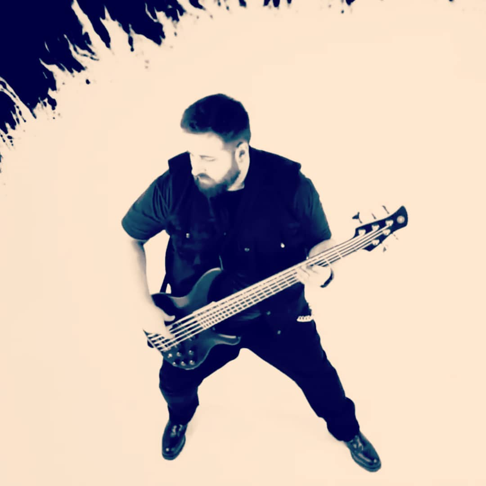

Marc Luque Costafreda
I'm a student of the Udacity Front End Web Developer Nanodegree.
As a first project I have decided to make a personal blog about my city, Barcelona.
Born in 1987 in Barcelona, I've lived all my life here.
I've decided to start this nanodegree to learn and increase my programming skills in the front end field.
I'm very excited about what I'm learning and hopefully can dedicate myself to it shortly, increaseing my knowledge every day.